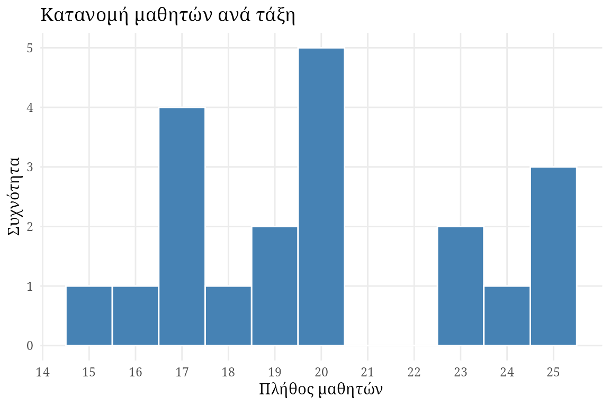
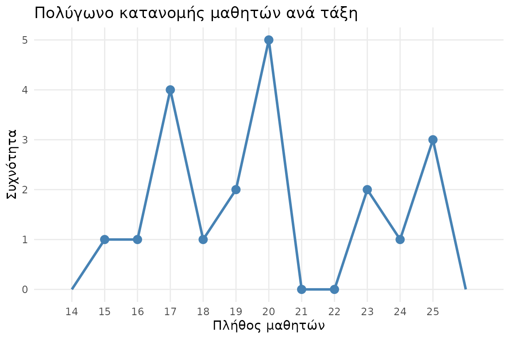
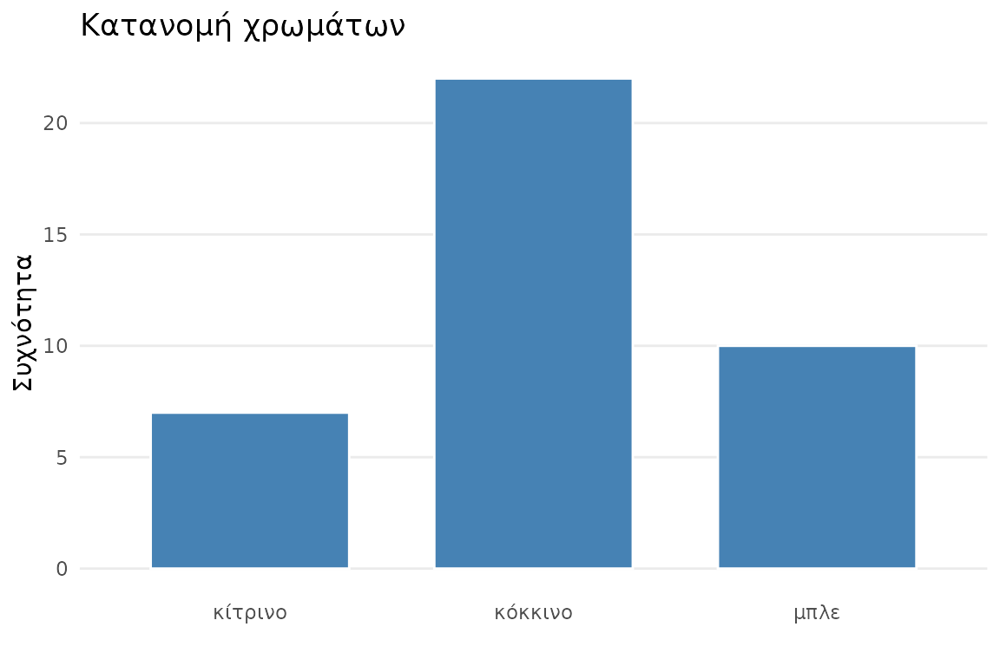

Κατανομές συχνοτήτων
Ο στόχος οποιασδήποτε συλλογής δεδομένων είναι κατανόηση του προβλήματος το οποίου ζητάμε την απάντηση και η εξαγωγή συμπερασμάτων τα οποία στη συνέχεια θα μπορέσουν με τον έναν ή τον άλλο τρόπο να τροφοδοτήσουν την πράξη. Πριν όμως το κάνουμε αυτό, σχεδόν πάντα, ξεκινάμε από μία απόπειρα κατανόησης των δεδομένων που μαζεύτηκαν. Δεν μπορεί κανείς να βγάλει εύκολα συμπεράσματα απλά κοιτώντας έναν πίνακα με μερικές δεκάδες στήλες και μερικές εκατοντάδες ή χιλιάδες γραμμές.
Μία από τις πιο απλές και χρήσιμες μεθόδους περιγραφής των δεδομένων που συλλέχθηκαν για ένα σύνολο μεταβλητών που μας ενδιαφέρει στηρίζεται στην έννοια της συχνότητας. Με απλά λόγια, η συχνότητα μίας τιμής μίας μεταβλητής που έχει μετρηθεί σε ένα δείγμα μας μετράει πόσες φορές εμφανίζεται η συγκγριμένη μεταβλητή σε σχέση τις υπόλοιπες.
Απόλυτη, σχετική και ποσοστιαία συχνότητα
Ξεκινάμε από την περίπτωση των διακριτών μεταβλητών. Έστω ότι έχουμε τη μεταβλητή \(X\), το πλήθος των μαθητών ανά τάξη, και ένα δείγμα από 20 νηπιαγωγεία της χώρας με τιμές \(x_1,\dots,x_20\):
Βλέπουμε ότι οι τιμές κειμένονται από 15 μέχρι 25. Οπότε μπορούμε εύκολα να φτιάξουμε έναν πίνακα συχνοτήτων
Ως άσκηση, επιβεβαιώστε ότι \(\sum X = \sum xf\).
Χρησιμοποιώντας τις συχνότητες εμφάνισης των τιμών μιας μεταβλητής μπορούμε να ορίσουμε τις αναλογίες. Η αναλογία \(q\) ορίζεται ως \[ f_r = \frac{f}{N}, \] όπου \(N\) είναι το μέγεθος του δείγματος. Επειδή η αναλογία περιγράφει τη συχνότητα μίας τιμής σε σχέση με μέγεθος του δείγματος, συχνά αποκαλείται και σχετική συχνότητα. Τέλος, μία αναλογία \(q\) μπορεί πολύ εύκολα να μετατραπεί σε ποσοστό \(p\) πολλαπλασιάζοντας το αποτέλεσμα με το 100 \[ f_{\%} = 100\times f_r = \Big(100\times \frac{f}{N}\Big) \% \]
Στην προηγούμενη περίπτωση, το πλήθος των μοναδικών τιμών που τελικά πήρε η μεταβλητή \(X\) ήταν σχετικά μικρό (συνολικά 9 διαφορετικές τιμές). Τι γίνεται όμως αν το πλήθος των πιθανών τιμών είναι πολύ μεγάλο; Για παράδειγμα, έστω ότι ένα δείγμα 30 μαθητών δημιούργησε μία ζωγραφιά με τελείες. Έστω \(Y\), το πλήθος των στιγμάτων που ζωγράφισε κάθε παιδί και οι τιμές που παρατηρήσαμε:
Για να δημιουργήσουμε έναν πίνακα συχνοτήτων ο οποίος να είναι χρήσιμος, μπορούμε να χωρίσουμε τις τιμές σε κατηγορίες. Για παράδειγμα, ένας πιθανός διαχωρισμός θα ήταν 21-40, 41-60, 61-80, 81-100, δημιουργώντας τον πίνακα ομαδοποιημένων συχνοτήτων
Ως άσκηση μπορείτε να συμπληρώσετε τον πίνακα συχνοτήτων με τις σχετικές και τις ποσοστιαίες συχνότητες των νέων κατηγοριών.
Γραφήματα κατανομής συχνοτήτων
Στην περίπτωση μεταβλητών που έχουν μετρηθεί σε μία ισοδιαστημική ή αναλογική κλίμακα δύο ειδών γραφήματα μπορούν να χρησιμοποιηθούν για να οπτικοποιήσουν την κατανομή των συχνοτήτων που παρατηρήθηκαν: τα ιστογράμματα και τα πολύγωνα.
Έστω ότι μελετάμε πάλι το παράδειγμα με το μέγεθος της τάξης. Για να κατασκευάσουμε ένα ιστόγραμμα των συχνοτήτων ιστόγραμμα, πρώτα καταγράφουμε τις μοναδικές τιμές που βρήκαμε για τα μεγέθη των τάξεων κατά μήκος του άξονα Χ. Στη συνέχεια, σχεδιάζουμε μια γραμμή πάνω από κάθε τιμή Χ, έτσι ώστε:
- Το ύψος της γραμμής να αντιστοιχεί στη συχνότητα για την εν λόγω κατηγορία.
- Για τις συνεχείς μεταβλητές, το πλάτος της γραμμής να εκτείνεται στα πραγματικά όρια της κατηγορίας.
Για τις διακριτές μεταβλητές, κάθε γραμμή να εκτείνεται ακριβώς στο μισό της απόστασης από την παρακείμενη κατηγορία σε κάθε πλευρά.
Για να κατασκευάσουμε ένα πολύγωνο, ξεκινάμε καταγράφοντας τις μοναδικές αριθμητικές τιμές κατά μήκος του άξονα Χ. Στη συνέχεια:
- Μια κουκκίδα τοποθετείται στο κέντρο πάνω από κάθε βαθμολογία, έτσι ώστε η κατακόρυφη θέση της κουκκίδας να αντιστοιχεί στη συχνότητα της κατηγορίας.
- Μια συνεχής γραμμή σχεδιάζεται από κουκκίδα σε κουκκίδα για να συνδέσει τη σειρά των κουκκίδων.
- Το γράφημα ολοκληρώνεται με το σχεδιασμό μιας γραμμής προς τα κάτω στον άξονα Χ (μηδενική συχνότητα) σε κάθε άκρο του εύρους των βαθμολογιών.
Οι τελικές γραμμές συνήθως σχεδιάζονται έτσι ώστε να φτάνουν στον άξονα Χ σε ένα σημείο που βρίσκεται μία κατηγορία κάτω από τη χαμηλότερη βαθμολογία στην αριστερή πλευρά και μία κατηγορία πάνω από την υψηλότερη βαθμολογία στη δεξιά πλευρά.

Ένα πολύγωνο μπορεί επίσης να χρησιμοποιηθεί με δεδομένα που έχουν ομαδοποιηθεί σε διαστήματα. Για μια ομαδοποιημένη κατανομή, τοποθετούμε κάθε κουκκίδα ακριβώς πάνω από το μέσο σημείο του διαστήματος. Το μέσο σημείο μπορεί να βρεθεί υπολογίζοντας τον μέσο όρο των υψηλότερων και χαμηλότερων βαθμολογιών στο διάστημα. Για παράδειγμα, για το διάστημα 20–29 θα έχει μέσο σημείο 24,5.
Ως άσκηση ζωγραφίστε το πολύγωνο για το παράδειγμα με το πλήθος των στιγμάτων που έκανε ο κάθε μαθητής στη ζωγραφιά που δημιούργησε.
Στην περίπτωση μεταβλητών που μετρήθηκαν σε μία ονομαστική ή διατάξιμη κλίμακα χρησιμοποιούμε τα ραβδογράμματα. Στην πράξη, τα ραβδομγράμματα μοιάζουν πολύ με τα ιστογράμματα με τη διαφορά ότι οι μπάρες στα ραβδομγράμματα δεν ακουμπούν μεταξύ τους. Για τις ονομαστικές μεταβλητές οι αποστάσεις δηλώνουν ότι η κλίμακα μέτρησης αποτελείται από ξεχωριστές πιθανές τιμές. Στην περίπτωση διατάξιμων μεταβλητών τα κενά τονίζουν ότι οι αποστάσεις μεταξύ των πιθανών τιμών δεν μπορούν να θεωρηθούν ίσες. Για παράδειγμα, έστω ότι έχουμε τον παρακάτω πίνακα συχνοτήτων για τη μεταβλητή
Χ: το χρώμα μαρκαδόρου που χρησιμοποίησε ο μαθητής για μια μονοχρωματική ζωγραφιά
